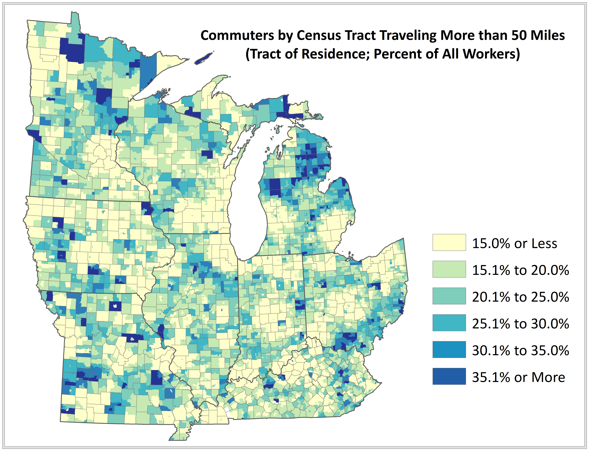
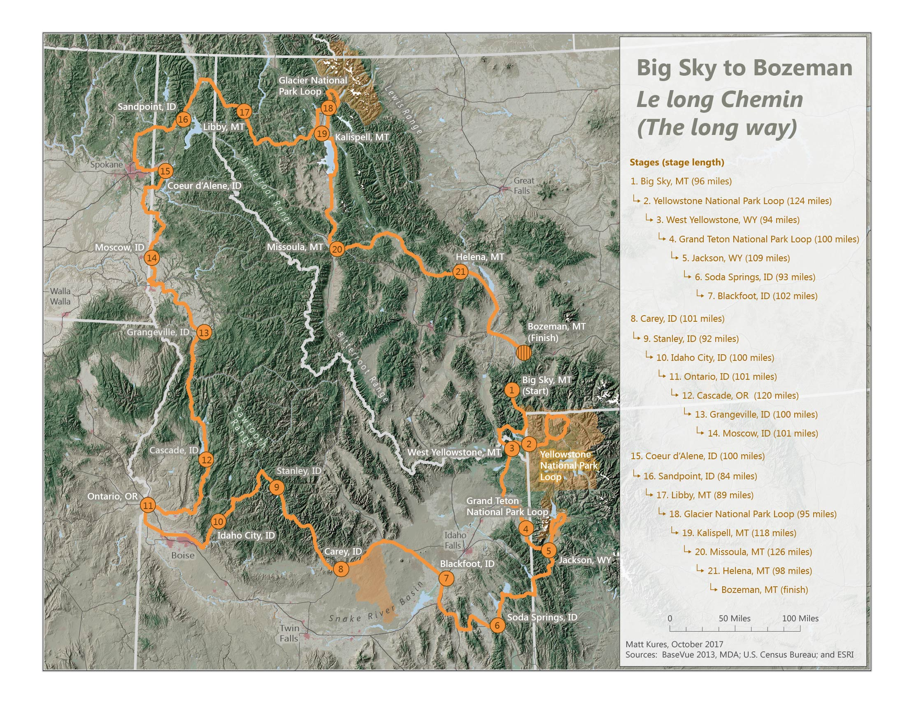
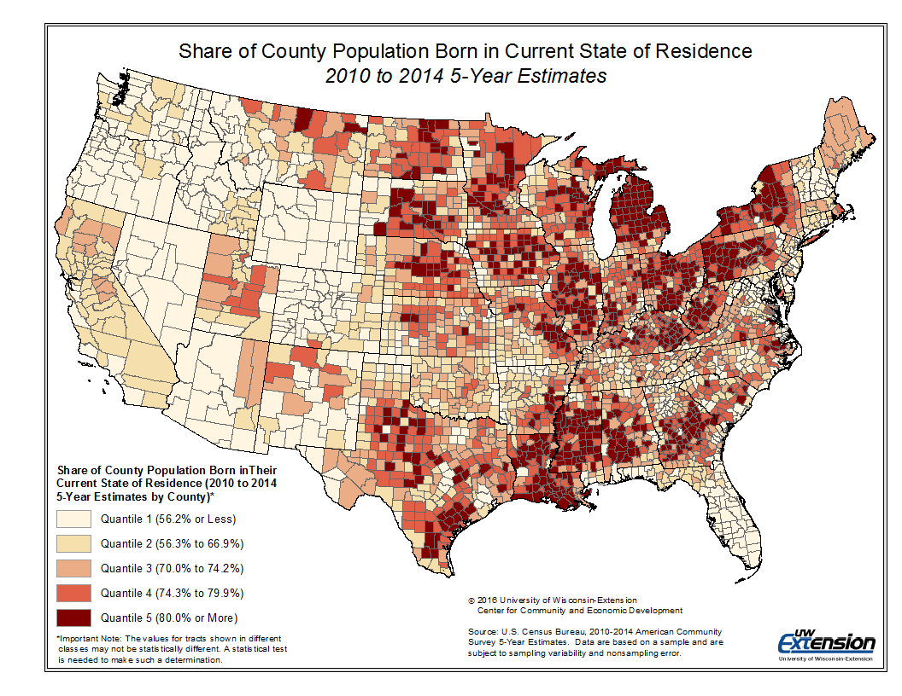

Welcome! My official title is Community Development Specialist, but I specialize in spatial analysis, cartography, demography, regional economic analysis and data science. I'm proudly employed by the University of Wisconsin-Extension Center for Community and Economic Development, where I embrace the Wisconsin Idea, or the philosophy that the university should influence people’s quality of life beyond the boundaries of the classroom. As part of my work, I assist communities and organizations in the areas of economic development strategy assessment, labor force research, socio-economic impact analysis and industry sector competitiveness. My background in GIS and cartography are a large part of this work. My current research emphases include industrial cluster policy, labor mobility, and changes to regional commuting patterns. My newest work is featured below, but please explore the rest of my portfolio.
Stretch Commuting Across the Rural-Urban Continuum
I recently presented new research on patterns and determinants of "stretch" commuters at the 2018 Southern Regional Science Association Conference in Philadelphia, PA. Stretch commuters are long-distance commuters traveling more than 50 miles each way between their place of residence and place of employment. The analysis involved more than one billion shortest path calculations of origin-destination pairs. You can download our working paper or our slide deck.
Exploring Shaded Relief: Big Sky to Bozeman, Montana
The Big Sky to Bozeman project explores using shaded relief and land cover characteristics to depict a bicycling race across the mountainous west. As an avid bicyclist, this 2,100 mile route and its accompanying terrain looks exhilarating and exhausting.
Sticky Places: Population born in State of Residence
We are currently researching factors that affect talent attraction and retention in Wisconsin. As part of this work, we are finding that a somewhat unique characteristic of Wisconsin is that it has one of the highest share of its population that was also born in state of any state in the nation. We are exploring how this trait influences social capital development, in-group acceptance, failed migrations and entrepreneurial propensity.
{kind=link}
{kind=link}